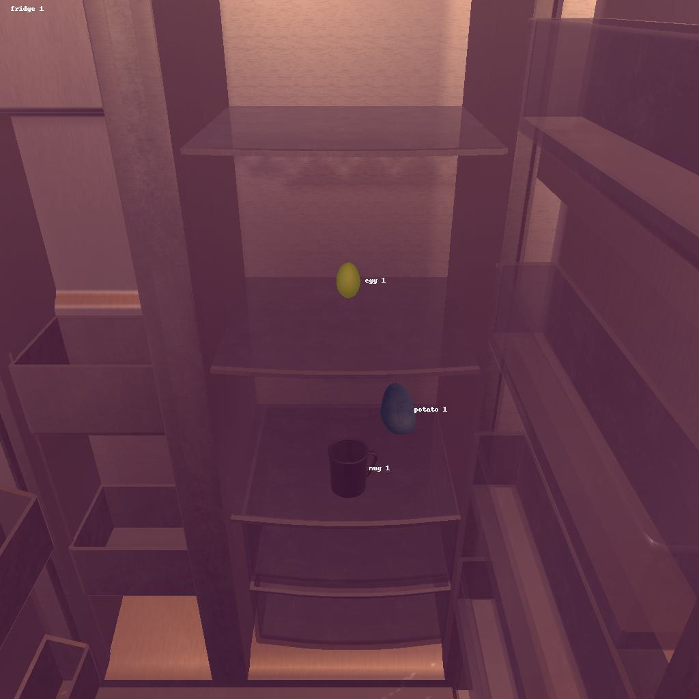

---------------------------------------------------------task: 29---------------------------------------------------------
--------------------------------------------------------------------------------------------------------------------------------------------------------------------
--------------------------------------------------------------------------------------------------------------------------------------------------------------------
Step:--------------------------------------------------------------------------5-------------------------------------------------------------------------------
----------------------------------------
VLM Prompt:
Image1:
**Instruction**
1. Analyze the provided image to identify all visible household objects, focusing on those relevant to the task description "find two tomato and put them in countertop."
2. Use the analysis of the image and the task hint "The agent must find an object of the desired type, pick it up, find the correct location to place it, put it down there, then look for another object of the desired type, pick it up, return to previous location, and put it down there with the other object." to answer the question: what is the most reasonable action in the choices for the task description "find two tomato and put them in countertop"?
4. Decide and write the answer using the template: The answer is: (i): , where i is the real number. If there is no desired object in the image, search every place based on **Initial Observation** to find the object. And if no one is exactly correct, choose a similar answer.
**Initial Observation**
You are in the middle of a room. Looking quickly around you, you can see cabinet (1-20), toaster (1), microwave (1), garbagecan (1), countertop (1-2), drawer (1-4), stoveburner (1-4), sinkbasin (1), sink (1), fridge (1), diningtable (1), coffeemachine (1)
**Answer Choices**
(1): go to cabinet 2
(2): go to cabinet 3
(3): go to toaster 1
(4): go to cabinet 5
(5): go to microwave 1
(6): go to garbagecan 1
(7): go to countertop 1
(8): go to drawer 1
(9): go to cabinet 6
(10): go to cabinet 7
(11): go to drawer 2
(12): go to stoveburner 1
(13): go to stoveburner 2
(14): go to countertop 2
(15): go to cabinet 8
(16): go to cabinet 9
(17): go to cabinet 10
(18): go to drawer 3
(19): go to drawer 4
(20): go to stoveburner 3
(21): go to stoveburner 4
(22): go to cabinet 11
(23): go to cabinet 12
(24): go to cabinet 13
(25): go to cabinet 14
(26): go to sinkbasin 1
(27): go to sink 1
(28): go to cabinet 15
(29): go to cabinet 16
(30): go to cabinet 17
(31): go to cabinet 18
(32): go to cabinet 19
(33): go to diningtable 1
(34): go to coffeemachine 1
(35): go to cabinet 20
(36): open fridge 1
(37): close fridge 1
(38): take mug 1 from fridge 1
(39): take potato 1 from fridge 1
(40): take egg 1 from fridge 1
(41): examine fridge 1
**Answer**
Let's think step by step by following the instructions.
----------------------------------------
----------------------------------------
Original Response:
The task is to find two tomatoes and put them on the countertop. From the initial observation, we can infer that tomatoes are unlikely to be found in appliances like the toaster, microwave, or garbage can. They are also unlikely to be on the stove burners or in the sink. Therefore, we can eliminate answer choices related to those locations.
Tomatoes are typically stored in a fridge, cabinet, or sometimes on a countertop. In the image provided, we can see an egg, a potato, and a mug inside a fridge labeled "fridge 1," but there are no tomatoes visible. Therefore, the most reasonable action would be to search for tomatoes in the places not visible in the image, such as other cabinets or the fridge, if not fully examined yet.
Since we are unsure if the fridge has been fully examined and tomatoes are commonly kept in a fridge, the best action would be to examine the fridge first. If there are no tomatoes in the fridge, the next reasonable step would be to search cabinets.
The answer is: (41): examine fridge 1.
----------------------------------------
----------------------------------------
>>> Refine Original VLM Response and Get Pure Action: examine fridge 1
----------------------------------------
-----------------------------------------------------------------
Running time: 8.23470425605774 seconds
Total Money: 10.486300000000007
-----------------------------------------------------------------
-----------------------------------------------------------------
Text Observation:On the fridge 1, you see a mug 1, a potato 1, and a egg 1.
-----------------------------------------------------------------
UNSUCCEED